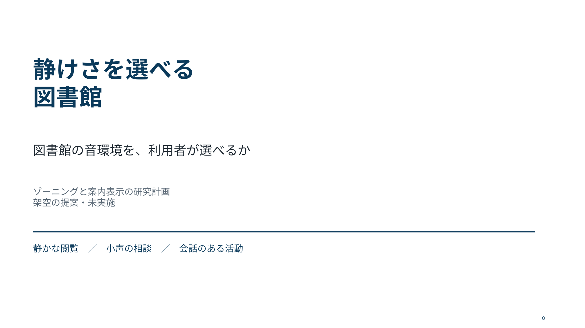

<!doctype html><html lang="ja"><meta charset="utf-8"><meta name="viewport" content="width=device-width,initial-scale=1"><title>静けさを選べる図書館</title><style>body{margin:0;background:#0b3a5b;color:white;font:16px sans-serif}header{padding:18px}main{max-width:1200px;margin:auto}img{display:block;width:100%;height:auto}nav{display:flex;justify-content:center;gap:20px;padding:15px}button,a{color:inherit}button{background:transparent;border:1px solid #9bb5c4;padding:10px 20px;cursor:pointer}a{margin-right:20px}</style><header>静けさを選べる図書館 <small>架空・未実施研究提案</small></header><main><nav><button onclick="go(-1)">前へ</button><span id="count">1 / 8</span><button onclick="go(1)">次へ</button><button onclick="play()" id="play">再生</button></nav></main><header><a href="deck.pptx">編集可能PowerPoint</a><a href="SKILL.md">日本語スキル</a><a href="README.md">制作と再生成</a></header><script>let i=1,t;function go(n){i=(i-1+n+8)%8+1;document.getElementById('slide').src='render/slide-'+String(i).padStart(2,'0')+'.png';document.getElementById('slide').alt=i+'頁目';document.getElementById('count').textContent=i+' / 8'}function play(){if(t){clearInterval(t);t=null;document.getElementById('play').textContent='再生'}else{t=setInterval(()=>go(1),5000);document.getElementById('play').textContent='停止'}}document.addEventListener('keydown',e=>{if(e.key==='ArrowRight')go(1);if(e.key==='ArrowLeft')go(-1)})</script></html>